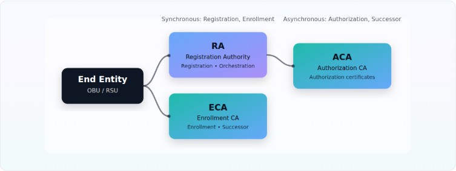

OPEN SOURCE • V2X PKI • IEEE 1609.2.1
OpenSCMS
An open-source, deployable Security Credential Management System (SCMS) aligned with IEEE 1609.2.1 (2022)—built for modularity, observability, easy deployment and testing.
Core Capabilities
OpenSCMS implements the complete server-side lifecycle defined by IEEE 1609.2.1, covering registration, enrollment, authorization provisioning and trust material distribution. The architecture is designed for correctness, parallelism, and responsabilities isolation.
Standards-Conformant Service Interfaces
REST-based endpoints aligned with IEEE 1609.2.1 component semantics, published as OpenAPI v3 specifications. Following all the details presented in IEEE 1609.2.1 (2022) document.
Asynchronous, High-Throughput Processing
Authorization and successor-enrollment workflows leverage task queuing and parallel worker execution to support high-throughput certificate processing. Furthermore, the stateless architecture of the components allows for the enhancement and evolution of OpenSCMS to become a fully scalable architecture.
Full Device Lifecycle Management
End Entities (OBU/RSU) progress through controlled states (Registered → Enrolled → Provisioning → Successor Enrolled), by the Registration Authority across all protocol flows.
Explicit & Implicit Certificate Support
Supports both explicit (ECDSA P-256) and implicit (ECQV) certificates, including OBK, UBK, and CUBK butterfly expansion mechanisms for pseudonym provisioning.
Deployment & Operations
- Kubernetes-native architecture with Docker-based containerization
- Unified deployment model using Helm and Skaffold
- Configurable via environment parameters for flexible policy control
- Integrated logging and deterministic failure handling
Designed for reproducible environments — from local Minikube clusters to production-grade Kubernetes infrastructure.
Component Architecture
- RA: registration, lifecycle enforcement, authorization orchestration
- ECA: enrollment and successor enrollment certificate issuance
- ACA: authorization certificate generation (butterfly + non-butterfly)
A modular microservice design separates cryptographic execution (C-based core) from orchestration logic (Rust backend), enabling safe concurrency and extensibility.
Architecture at a Glance
Each component maintains its own state (local database). Public APIs are exposed per role and described via OpenAPI.

Additional Highlights
IEEE 1609.2.1 Certificate Support
- Enrollment and Authorization certificate flows
- Implicit (ECQV) and Explicit (ECDSA P-256) certificates
- OBK, UBK, and CUBK butterfly mechanisms
- For application (non-butterfly): encrypted or plain-text
Designed specifically for V2X ecosystems, with full lifecycle handling of registration, enrollment, provisioning, revocation, and trust distribution..
Standalone Cryptographic & ASN.1 Engine
OpenSCMS includes a dedicated C-based cryptographic core (oscms-codecs-bridge) responsible for:
- ASN.1 SPDU encoding/decoding
- ECDSA signing and verification
- ECIES encryption/decryption
- Implicit certificate reconstruction
The codec abstraction layer is decoupled from service logic, allowing alternative ASN.1 implementations without impacting the backend.
Modular & Open Architecture
- Microservices-based design aligned with REST-based standard flows
- Rust backend with safe C integration via bindgen
- Docker + Kubernetes unified deployment model
- Apache License 2.0
Built for transparency, auditability, and extensibility — enabling researchers, OEMs, and infrastructure providers to evaluate and extend SCMS implementations with confidence.
Get Started with OpenSCMS
Explore the documentation, try a deployment, or contribute to the project.